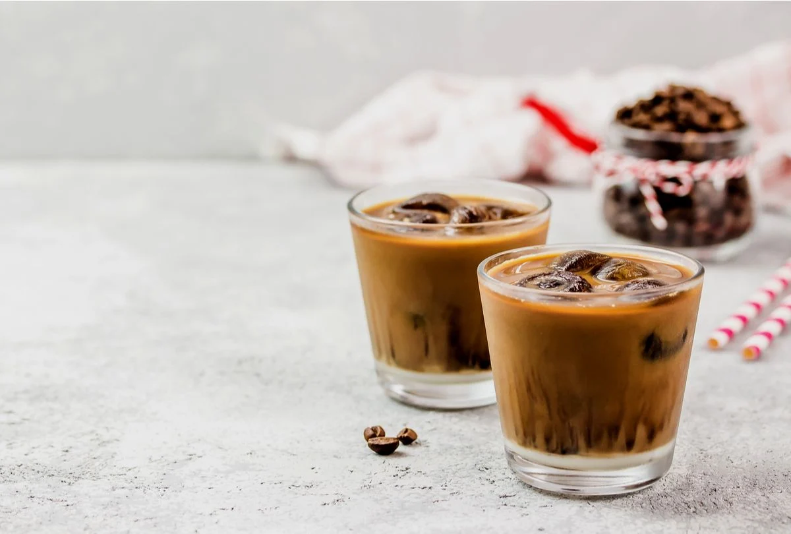
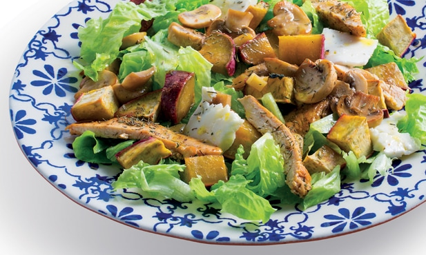
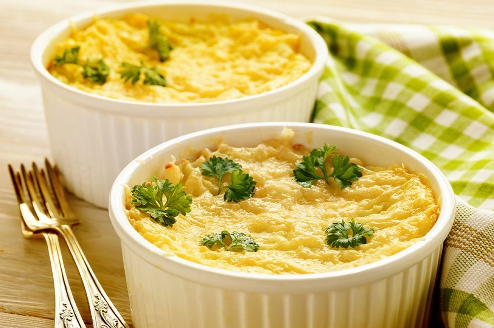
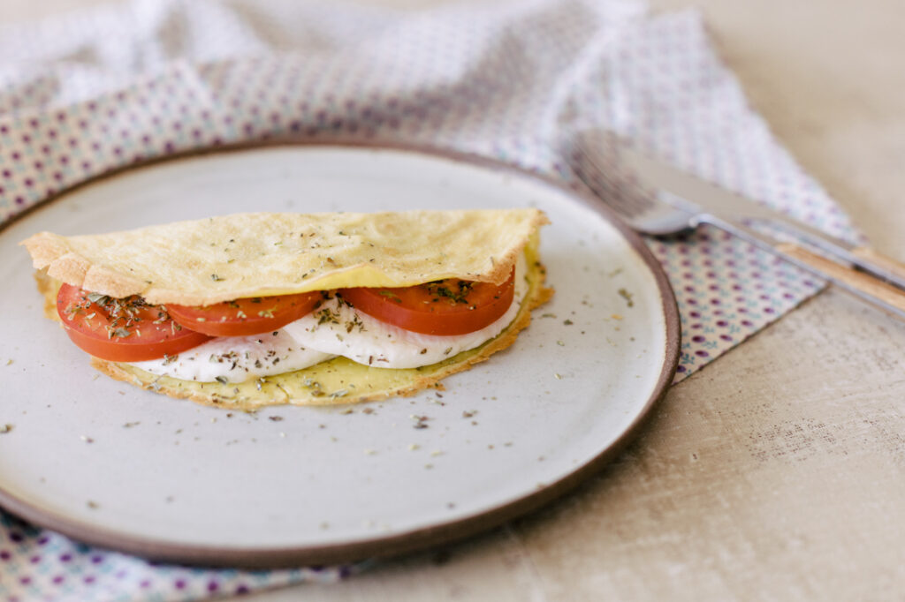

Smoothie de morango e banana

Ingredientes:
- 2 bananas congeladas
- 2 xícaras de chá de morangos congelados
- 1/3 xícara de chá de iorgute natural bem consistente
- Adoçante ou açúcar a gosto
Smoothie de manga e banana

Ingredientes
- 1/2 banana-prata picada
- 1 xícara de chá de leite de amêndoas
- 1/2 xícara de chá de iorgute natural integral
- 1/2 xícara de cubos de gelo
- 1 colher de sopa de aveia
- 1/2 colher de sopa de mel
Capuccino proteico

Ingredientes
- 1 scoop de whey do sabor de sua preferência
- 1 colher de café solúvel
- 1 colher de cacau em pó
- 1/2 colher de canela em pó
Salada de batata doce com frango picante

Ingredientes
- 2 unidades de limão;
- 2 unidades de pimenta malagueta seca;
- 1 colher de chá de sementes de cominho;
- 2 dentes de alho descascados e amassados;
- Sal e pimenta a gosto
- Azeite a gosto;
- 6 unidades de sobrecoxa ou coxa de frango picados;
- 3 unidades de batatas-doce cortadas em pedaços;
Escondidinho de batata doce com carne moída

Ingredientes
- 2 colheres de sopa de azeite;
- 1 cebola picada;
- 500g de carne moída;
- 1kg de batata doce;
- 2 colheres de sopa de manteiga;
- 1/2 copo americano de leite;
- Sal a gosto
- 100g de queijo parmesão ralado;
Crepioca de queijo com tomate e orégano

Ingredientes
- 1 ovo
- 2 colheres de sopa de tapioca
- 1 pitada de sal rosa
- 1 fio de azeite de oliva
- 1 fatia de queijo mussarela
- 1 colher de sopa de tomate picadinho
- Orégano a gosto